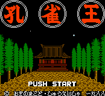

Kujaku-Ou - Nintendo Games
Table of Contents
|
Series Information
Genesis Games
|
Nintendo Games
Kujaku-Ou

Genre:
RPG
No information at this time.
Anime Video Game Resource Center © 1998 by
Luis A. Cruz